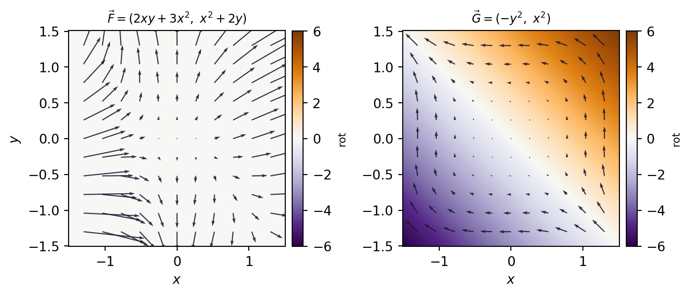

Encontrar la “altura” \(f\) cuya pendiente es el campo \(\vec F\). Este capítulo explica qué significa eso, por qué importa, cómo se detecta y cómo se hace.
1.1 Qué estamos buscando
Definición 1.1 (Campo conservativo) Un campo vectorial \(\vec F : D \subseteq \mathbb{R}^n \to \mathbb{R}^n\) es conservativo (o campo de gradientes) si existe un campo escalar\(f : D \to \mathbb{R}\), llamado función potencial, tal que
\[
\nabla f = \vec F
\qquad \Longleftrightarrow \qquad
\left( \frac{\partial f}{\partial x}, \frac{\partial f}{\partial y}, \frac{\partial f}{\partial z} \right) = (P, Q, R).
\tag{1.1}\]
Leído al revés: dadas las derivadas parciales, hay que reconstruir la función. Es el problema inverso de derivar, pero en varias variables y con varias condiciones simultáneas. Y como toda condición simultánea, puede no tener solución: la mayoría de los campos vectoriales no son conservativos. Eso es lo primero que conviene tener en la cabeza, porque las guías —esta incluida— están llenas de ejemplos que sí lo son, y eso da una impresión equivocada.
TipLa intuición del terreno
Pensá en \(f\) como la altura de una montaña sobre el punto \((x,y)\). Entonces \(\vec F = \nabla f\) es, en cada punto, la flecha que indica hacia dónde subir más rápido y con qué pendiente.
Un campo es conservativo cuando sus flechas son consistentes con algún relieve: si caminás en círculo y volvés al punto de partida, tenés que volver a la misma altura. Un campo que “sube siempre” dando la vuelta completa —como la escalera imposible de Escher— no proviene de ninguna altura, y por lo tanto no es conservativo.
La Figura 1.1 muestra el relieve del ejemplo que vamos a usar en todo el capítulo siguiente, \(f(x,y) = x^2y + x^3 + y^2\), y su campo de gradientes dibujado en el piso.
Figura 1.1: Izquierda: el relieve \(f(x,y)=x^2y+x^3+y^2\). Derecha: el mismo relieve visto desde arriba, con sus curvas de nivel y las flechas de \(\vec F = \nabla f\). Las flechas cruzan las curvas de nivel perpendicularmente y apuntan hacia lo alto; donde las curvas se aprietan, la pendiente es grande y las flechas se alargan.
En pantalla el mismo relieve se puede girar, y el deslizador corta la montaña a la altura que quieras para ver de dónde sale cada curva de nivel.
La curva blanca es el borde del corte a altura \(c\): todos los puntos donde \(f = c\). Su
sombra violeta en el piso es la curva de nivel de toda la vida. Girá hasta mirar desde
arriba y vas a ver el dibujo de la derecha de la figura anterior; girá hasta mirar de costado
y vas a ver que la curva de nivel es, literalmente, una curva de nivel.
1.2 Por qué importa: el teorema fundamental de las integrales de línea
Teorema 1.1 (Teorema fundamental de las integrales de línea) Si \(\vec F = \nabla f\) con \(f\) de clase \(C^1\) en \(D\) abierto, y \(C \subset D\) es una curva suave a trozos que va de \(A\) a \(B\), entonces
\[
\int_C \vec F \cdot d\vec r = f(B) - f(A).
\tag{1.2}\]
La demostración es la regla de la cadena leída al revés: si \(\vec r(t)\) parametriza \(C\) con \(t \in [a,b]\), entonces \(\frac{d}{dt} f(\vec r(t)) = \nabla f(\vec r(t)) \cdot \vec r\,'(t) = \vec F(\vec r(t)) \cdot \vec r\,'(t)\), y la integral de una derivada es la diferencia de los valores en los extremos. Es Barrow, con el gradiente haciendo de derivada.
Tres consecuencias que se usan todo el tiempo:
El trabajo no depende del camino, solo de los extremos. Es una diferencia de alturas: ir de \(A\) a \(B\) por donde sea acumula lo mismo.
Sobre cualquier curva cerrada el trabajo es cero:\(\oint_C \vec F \cdot d\vec r = 0\), porque \(A = B\).
Una integral de línea complicada se calcula evaluando \(f\) en dos puntos, sin parametrizar nada. Este es el ahorro de cuentas que hace que valga la pena buscar el potencial.
En física esto es la conservación de la energía. Se define la energía potencial \(U = -f\) y entonces \(W = -\Delta U\); si \(\vec F\) es la única fuerza, el teorema del trabajo y la energía cinética da \(\Delta E_c = W = -\Delta U\), o sea que \(E_c + U\) se mantiene constante. De ahí el nombre conservativo.
ImportanteEl recíproco también vale, y es el que cierra la equivalencia
Si \(\vec F\) es continuo en un abierto conexo\(D\) y la integral de línea no depende del camino, entonces \(\vec F\) es conservativo: se fija un punto base \(X_0 \in D\), se define \(f(X) = \int_{X_0}^{X} \vec F \cdot d\vec r\) —que está bien definida justamente porque no depende del camino— y se verifica que \(\nabla f = \vec F\).
O sea:
\[
\vec F \text{ conservativo}
\iff \oint_C \vec F \cdot d\vec r = 0 \ \ \forall\, C \text{ cerrada}
\iff \text{la integral no depende del camino.}
\]
Estas tres son siempre equivalentes, en cualquier abierto conexo. La condición de derivadas cruzadas de la sección que sigue es otra cosa, y ahí es donde aparece la letra chica.
1.3 Cómo detectarlo: la condición de las derivadas cruzadas
Si \(\vec F = \nabla f\) y \(\vec F\) es de clase \(C^1\), entonces \(f\) es de clase \(C^2\) y el teorema de Schwarz dice \(f_{xy} = f_{yx}\). Traducido a las componentes de \(\vec F\):
El rotor no es una cuenta arbitraria que sirve para testear: mide la circulación por unidad de área. El teorema de Green lo dice con todas las letras: para una región \(\Omega\) con borde \(\partial\Omega\) recorrido en sentido antihorario,
\[
\oint_{\partial \Omega} \vec F \cdot d\vec r = \iint_{\Omega} \left( \frac{\partial Q}{\partial x} - \frac{\partial P}{\partial y} \right) dA .
\tag{1.6}\]
Si tomamos \(\Omega\) = un cuadradito de lado \(h\) centrado en un punto y hacemos \(h \to 0\):
\[
\operatorname{rot} \vec F(x_0,y_0) = \lim_{h \to 0} \frac{1}{h^2} \oint_{\partial \Omega_h} \vec F \cdot d\vec r .
\]
Es decir: el rotor en un punto es cuánto trabajo neto acumula una vuelta infinitesimal alrededor de ese punto, por unidad de área. Si eso no es cero, hay una vuelta cerrada con trabajo no nulo, y entonces no puede haber potencial. Ahí está, en una línea, por qué el test es necesario.
La imagen física es un molinete: si ponés una rueda de paletas diminuta en un punto y el fluido la hace girar, el rotor en ese punto no es cero. Su velocidad angular es exactamente la mitad del rotor.
Ver el código de la figura
import numpy as npimport matplotlib.pyplot as pltTINTA ="#1e1a2e"xs = np.linspace(-1.5, 1.5, 200)X, Y = np.meshgrid(xs, xs)xq = np.linspace(-1.3, 1.3, 11)XQ, YQ = np.meshgrid(xq, xq)campos = [ ("$\\vec F = (2xy+3x^2,\\ x^2+2y)$", lambda x, y: (2*x*y+3*x**2, x**2+2*y), np.zeros_like(X)), ("$\\vec G = (-y^2,\\ x^2)$", lambda x, y: (-y**2, x**2), 2*(X+Y)),]fig, axes = plt.subplots(1, 2, figsize=(7.4, 3.3))for ax, (tit, campo, rot) inzip(axes, campos): im = ax.pcolormesh(X, Y, rot, cmap="PuOr_r", vmin=-6, vmax=6, shading="auto") U, V = campo(XQ, YQ) ax.quiver(XQ, YQ, U, V, color=TINTA, width=.005, scale=30, alpha=.9) ax.set_title(tit, fontsize=9) ax.set_aspect("equal"); ax.set_xlabel("$x$") fig.colorbar(im, ax=ax, fraction=.046, pad=.03).set_label("rot", fontsize=8)axes[0].set_ylabel("$y$")fig.tight_layout()plt.show()

Figura 1.2: El rotor como mapa de colores, para los dos campos extremos de la figura interactiva. Izquierda: \(\vec F = (2xy+3x^2,\ x^2+2y)\), con \(\operatorname{rot} \vec F = 0\) en todo el plano; el color plano es el test cumpliéndose. Derecha: \(\vec G = (-y^2,\ x^2)\), con \(\operatorname{rot} \vec G = 2(x+y)\), que es positivo arriba de la antidiagonal y negativo abajo. Sobre la recta \(y=-x\) el rotor se anula: ahí, y solo ahí, el molinete queda quieto.
El campo es \(\vec F_\lambda = (1-\lambda)\,(2xy+3x^2,\ x^2+2y) + \lambda\,(-y^2,\ x^2)\).
Con mezcla = 0 es el campo conservativo del ejemplo; con mezcla = 1 es
\(\vec G=(-y^2,x^2)\), que no lo es. La circulación sobre el cuadradito se calcula
numéricamente, recorriendo el borde en sentido antihorario; dividida por el área \(h^2\)
da el rotor, tal cual predice la fórmula de Green. Bajá el lado \(h\) y mirá cómo el cociente se
clava en el valor teórico. Con el tiempo gira el molinete: su velocidad angular es
la mitad del rotor, y cambia de signo al cruzar la recta \(y=-x\).
1.4 Cuidado con el dominio
AdvertenciaLa letra chica del test
La condición de derivadas cruzadas es necesaria siempre (es Schwarz), pero solo es suficiente si el dominio \(D\) es abierto y simplemente conexo: sin agujeros, en el sentido de que toda curva cerrada contenida en \(D\) se puede contraer a un punto sin salirse de \(D\).
que cumple \(P_y = Q_x\) en todo su dominio y sin embargo su circulación sobre la circunferencia unitaria vale \(2\pi \neq 0\): no es conservativo. Por eso, antes de concluir, siempre hay que decir en qué región se trabaja.
Este campo tiene un capítulo propio: el Sección 3.2 lo mira de cerca, con el potencial multivaluado incluido, porque es el ejemplo que separa “el test da bien” de “el campo es conservativo”.
Dos observaciones que suelen confundirse:
En \(\mathbb{R}^3\), sacarle un punto no rompe la simple conexión: toda curva cerrada se puede contraer esquivando el origen. Por eso en los ejercicios Sección 4.3 y Sección 4.5 alcanza con \(\operatorname{rot} \vec F = \vec 0\) para concluir.
En \(\mathbb{R}^2\), sacarle un punto sí la rompe: una circunferencia alrededor del agujero no se puede contraer. Por eso 1.7 se salva del test.
1.5 La receta para hallar \(f\)
Identificar componentes y dominio. Escribir \(P\), \(Q\) (y \(R\)) y anotar dónde son de clase \(C^1\). Si aparecen denominadores, raíces o logaritmos, ahí está la restricción del dominio, y además hay que mirar si lo que queda es simplemente conexo.
Testear las derivadas cruzadas. Calcular \(P_y\) y \(Q_x\) (y las otras dos parejas en \(\mathbb{R}^3\)). Si no coinciden, se termina acá: el campo no es conservativo y no existe potencial. Si coinciden y el dominio es simplemente conexo, existe.
Integrar una componente. Elegir la más fácil de integrar. Si integramos \(P\) respecto de \(x\), la “constante” de integración es una función de las otras variables: \(f(x,y) = \int P(x,y)\,dx + g(y)\).
Derivar respecto de la otra variable e igualar. Se impone \(f_y = Q\). Los términos que ya salieron de la integración se cancelan y queda una ecuación simple para \(g'(y)\). Se integra y se obtiene \(g\). En \(\mathbb{R}^3\) se repite el mecanismo una vez más con \(R\).
Fijar la constante y verificar. El potencial queda determinado salvo una constante \(C\) (en cada componente conexa del dominio). Si el enunciado da un dato del tipo \(f(P_0) = k\) —“tal que \(f(2;1) = 0\)” o “nivel 3 en \((1;-5)\)”— se reemplaza y se despeja \(C\). Por último, conviene calcular \(\nabla f\) y comprobar que da \(\vec F\).
PrecauciónSeñales de que algo salió mal
Al hacer el paso 4 aparece un \(g'(y)\) que todavía depende de \(x\). Eso es imposible: significa que el campo no era conservativo, o que hay un error de cuenta en el paso 3. Si el test del paso 2 dio bien, es lo segundo.
Olvidar que la constante de integración es una función de las demás variables, y escribir solo “\(+C\)”. Ese es el error más frecuente de todos.
En \(\mathbb{R}^3\), hacer el segundo ajuste y escribir “\(+C\)” en vez de “\(+h(z)\)”. Mismo error, una vuelta más adentro.
Confundir el potencial \(f\) (con \(\nabla f = \vec F\)) con la energía potencial \(U = -f\) de la física. Los ejercicios Sección 4.3 y Sección 4.5 piden explícitamente “la función potencial”, así que se responde con \(f\), aclarando el signo.
Concluir “es conservativo” sin decir en qué región. Si el campo tiene denominadores, el dominio es parte de la respuesta.
Un campo \(\vec F\) de clase \(C^1\) en \(\mathbb{R}^2 \setminus \{(0,0)\}\) cumple \(P_y = Q_x\) en todo su dominio. ¿Qué se puede afirmar?
Es conservativo, porque cumple el test.
Es conservativo en cualquier disco abierto contenido en el dominio, pero puede no serlo en todo el dominio.
No es conservativo, porque el dominio tiene un agujero.
No se puede afirmar nada: el test no dice nada sin información extra.
La correcta es la segunda. El test es local: donde el dominio se ve como un disco (simplemente conexo), rot nulo alcanza y el potencial existe. El problema es pegar esos potenciales locales en uno solo que sirva para todo el dominio agujereado, y eso puede fallar —de hecho falla para 1.7—. La tercera opción es el error simétrico: que el dominio tenga un agujero no impide que el campo sea conservativo. El campo \(\vec F = (x,y)/(x^2+y^2)\), por ejemplo, vive en el mismo dominio agujereado y sí tiene potencial: \(f = \tfrac12 \ln(x^2+y^2)\).
Sea \(\vec F(x,y) = \left(3x^2y + \alpha y^2,\ x^3 + 4xy\right)\). ¿Para qué valor de \(\alpha\) el campo es conservativo en \(\mathbb{R}^2\)?
\(P_y = 3x^2 + 2\alpha y\) y \(Q_x = 3x^2 + 4y\). Para que coincidan en todo el plano tienen que ser iguales como funciones, o sea \(2\alpha y = 4y\) para todo \(y\), y de ahí \(\alpha = 2\).
Con ese valor el potencial sale en dos renglones: \(f = \int (3x^2y + 2y^2)\,dx = x^3y + 2xy^2 + g(y)\), y de \(f_y = x^3 + 4xy + g'(y) = x^3 + 4xy\) resulta \(g' = 0\). Queda \(f(x,y) = x^3y + 2xy^2 + C\).
Con cualquier otro \(\alpha\) el rotor vale \(\operatorname{rot}\vec F = 4y - 2\alpha y = (4-2\alpha)y\), que se anula solo sobre el eje \(x\): el campo tendría molinetes girando en casi todo el plano.